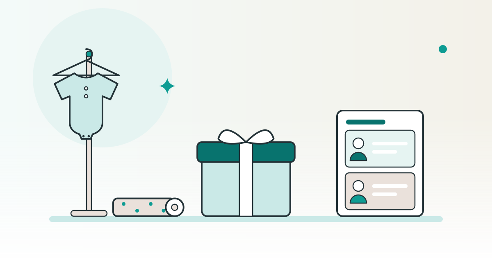

SHOPKIT コラム
ベビー服のギフト注文贈り先・包装・金額表示を整理

ベビー服のギフト注文は、購入者と贈り先を分け、包み方・同封する物・連絡する相手を先に決めてから受け付けます。注文を受けた後で「値段の分かる紙は入れるのか」「誰の名前で届けるのか」と迷わないよう、準備する項目を整理しましょう。ここでは、既に選んだ服を贈り物として届けるための店内手順を扱います。
この記事は、完成品のネットショップを販売している SHOPKIT が書いています。
この記事で分かること
- 購入者・贈り先・連絡先を分けて記録する方法
- 包装と同封物を販売ページで案内する項目
- 発送前に注文内容と荷物を照らす順番
ベビー服のギフトは、できる包装を決めてから受け付ける
まず決めるのは、どんな包装を用意でき、何が注文内容に含まれるかです。袋に入れるのか、箱を使うのか、メッセージを付けるのかを分けます。写真だけで伝えず、注文で選べる内容と、撮影用に置いた物を文章でも区別しましょう。
服が複数入る注文では、全体をまとめて包むか、商品ごとに分けるかも先に決めます。「ギフト包装」という言葉だけでは、お客様とお店が思い浮かべる形が違うことがあります。袋や箱の見本と、入れられる商品の条件を組み合わせて案内してください。
受けられない希望は、購入後に初めて伝えるのではなく、注文前の案内へ入れます。たとえばメッセージの手書きを受けないなら、用意するカードの形を示すと、何を選べるかが伝わります。できるか決まっていない希望を、写真から期待させる形にしないようにしましょう。
| 先に決めること | 注文前に見せる内容 | 発送前に照らす内容 |
|---|---|---|
| 包み方 | 袋・箱の見本と、まとめ包みか個別包みか | 選んだ包み方と荷物の中身 |
| 同封する紙 | 金額が分かる紙、カード、取扱いの案内の扱い | 購入者宛ての物が贈り先へ入っていないか |
| 届け先 | 購入者と別の場所へ届ける際の入力項目 | 氏名・住所・部屋番号と注文の対応 |
| 追加の負担 | 包装などの条件と費用がある場合の案内 | 選択内容と受け付けた金額 |
注文者と受け取る人を、同じ欄に書き込まない
購入者は注文の確認先、贈り先は荷物の届け先として、別々に記録します。購入者の住所を配送先へ写してしまわないよう、作業用の記録にも欄の名前を残してください。相手が違う注文を、通常の自宅宛て注文と同じ感覚で処理しないことが大切です。
希望の内容を尋ねる連絡は、まず購入者とのやり取りとして整理します。贈り先へ確認する必要がある場合も、いきなり購入金額や注文の相談内容を送らず、誰に何を伝えるかを購入者と合わせましょう。驚かせたい贈り物なのかといった事情も、連絡の仕方に関わります。
注文後に届け先が変わるときは、元の入力を消して書き換えるだけにしないでください。変更を受けた日時、対象の注文、反映する箇所を残し、送り状や作業用の控えにも変更が届いたかを確かめます。
発送前のポイント：購入者の名前と贈り先の名前を、記憶で入れ替えないようにします。作業の最後に、注文記録・包んだ商品・送り状を並べて照らしましょう。
金額が分かる紙と、商品に必要な表示を分けて扱う
金額が分かる紙を同封するかどうかは、注文の案内に書いておきます。一方で、商品に付いている表示や取扱いの案内まで、贈り物だからと一緒に外す判断はしないようにしましょう。衣類の表示の話と、納品の書面の扱いを分けて考えます。
購入者が支払った内容を確かめるための案内は、贈り先へ入れる物とは別に用意できます。使っている注文管理の仕組みで、誰に送信されるかも含めて点検してください。印刷した紙だけでなく、メールの宛先や添付内容も対象です。
交換や返品の相談先は、ギフトでも読める形にします。購入者へ連絡してほしい内容と、受け取った人から相談できる内容を整理しましょう。個別の返品可否をここで一律に決めず、注文前に示した条件や、届いた物の状態に応じて確かめる流れにします。
関連：ネットショップの返品の決まり｜通信販売にクーリング・オフは無い？返品特約の書き方
包装の案内にも、費用と届ける予定をそろえる
包装を選んだ後で、費用や発送の条件が分からなくなる案内は避けましょう。通常の注文と条件が違うなら、選択する場所の近くに示します。商品ページの説明、注文時の選択肢、確認の連絡で、同じ内容になっているかを見ます。
消費者庁の通信販売の案内は、広告で示す内容として商品の価格や送料、支払いと引渡しの時期などを挙げています。購入者が別に負担するお金がある場合は、その内訳と金額も対象です。出典：消費者庁「通信販売」の案内の広告表示（2026年10月25日確認）。
贈り物には、間に合わせたい日があることもあります。希望を聞く欄と、お店が引き受けた予定は分けて記録してください。まだ確かめていない配送の見込みを、到着の約束として返信しないようにします。
関連：ネットショップの送料の決め方｜発送方法・梱包と先に伝えること
お店を受け取る前に、ギフトの受付欄を見ておく
SHOPKITのサービスページは、お店の管理画面の使い方や、注文から発送までの手順をまとめたマニュアルを案内しています。出典：お渡しするもの（2026年10月15日時点の記載）。
完成品のお店から始める場合も、ギフトの受付を行うかは、用意する資材や自分の作業と合わせて考えましょう。相談では、購入者と届け先を画面でどう見分けるか、包装の選択をどこで読むかを質問すると、必要な準備を具体的にできます。
よくある質問
ギフト包装は、希望が来てから決めてもよいですか？
包み方、同封する物、費用や発送の条件を決めてから案内しましょう。注文前に選べる内容を示すと、写真から別の形を期待されることを避けやすくなります。
贈り先へ金額が分かる紙を入れない場合、何を点検しますか？
同封物の扱いを注文前に案内し、購入者向けの案内と分けます。紙の内容に加え、確認メールの宛先や添付内容も点検してください。商品の表示とは分けて考えます。
購入者とは別の人へ届ける注文で、最後に照らす物は何ですか？
注文記録、包んだ商品、送り状を並べ、贈り先の氏名や住所と選んだ包装を照らします。届け先の変更があれば、作業用の控えまで反映したかを見直します。
※ 公的資料は2026年10月25日に確認しました。包装料金や納期、個別の返品可否は示していません。SHOPKITのマニュアルの説明は2026年10月15日時点のサービスページの記載です。